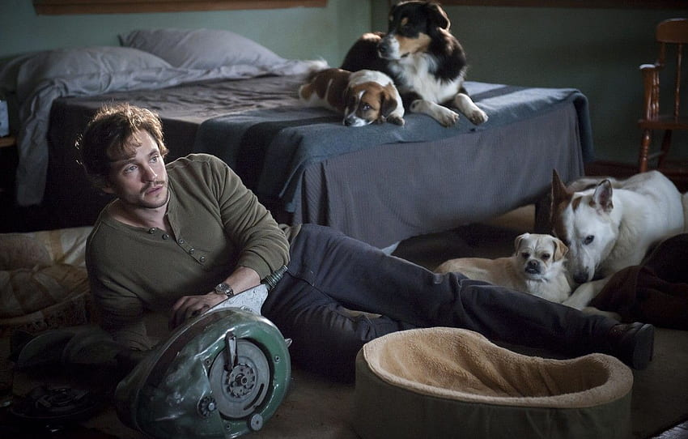
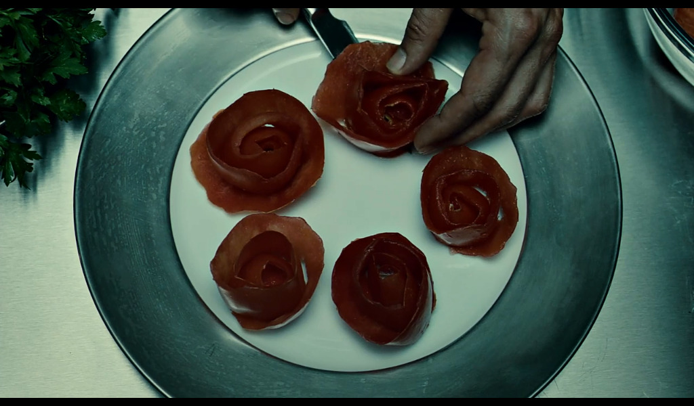
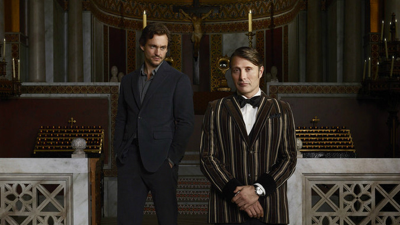

Will Graham
Will Graham, el protagonista principal de Hannibal de NBC, es un acusado criminal y cazador de asesinos en serie que posee una habilidad única para identificar y comprender a los asesinos a los que persigue.

Vive en una casa de campo en Wolf Trap, Virginia, junto a su familia de perros rescatados. Inicialmente enseñaba forense para el FBI, pero fue reintegrado al campo por Jack Crawford, con quien trabajó junto a Hannibal Lecter en la búsqueda de asesinos en serie. La habilidad psicológica de Will, a la que él se refiere como "interpretar la evidencia", le permite asumir el estado mental de un asesino y recrear sus pensamientos y acciones para comprenderlos mejor, una capacidad descrita por Hannibal como "pura empatía".
Hannibal Lecter
El Dr. Hannibal Lecter, principal antagonista del programa Hannibal de NBC, es un psiquiatra que colabora con el agente especial Will Graham en la búsqueda de asesinos en serie. A pesar de su apariencia respetable, Hannibal es en realidad el temido Destripador de Chesapeake, un caníbal que lleva a cabo crímenes para satisfacer sus oscuros impulsos.

Nacido en Lituania en una familia aristocrática, Hannibal sufrió la pérdida de sus padres y de su hermana Mischa, cuya muerte y consumo marcaron profundamente su vida. A lo largo de su trayectoria, Hannibal demuestra una fascinación por la mente de Will Graham y muestra un interés aparente por el arte, la literatura y la música, mientras oculta su siniestra naturaleza detrás de una máscara de sofisticación y perfeccionismo.

Nacido en Lituania y perteneciente a una familia de clase alta, Hannibal sería víctima de los sucesos trágicos de la Segunda Guerra Mundial, perdiendo a todos sus seres queridos cuando era tan solo un niño, marcándolo para siempre y deformando su mente al punto de poseer tendencias homicidas y al canibalismo, matando a los responsables de la muerte de su familia.